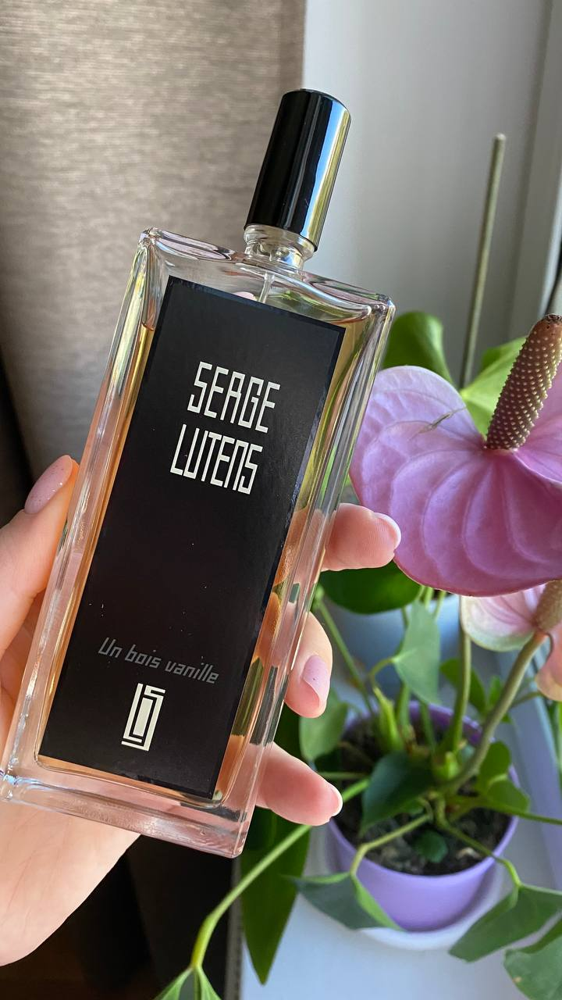

Можете представить себе сливочный коктейль с клементином? Тогда это он. Многогранный, но округлый. Сложно выделить что-то отдельно, звучит очень гармонично
Стартует живым миндалем, но без цианида, апельсином, потом звонкий персик и за ним остаётся облако того самого орехового крема
Сочно, зелено. В тепле должен показаться кокос, но пока он прячется в ветках сочной фиги
Нежная, сладковатая ваниль, оттенённая тёплым сандалом и обрамлённая тонка. Не булочная, но десерт. Представляется кремовой тарталеткой на белой фарфоровой тарелочке